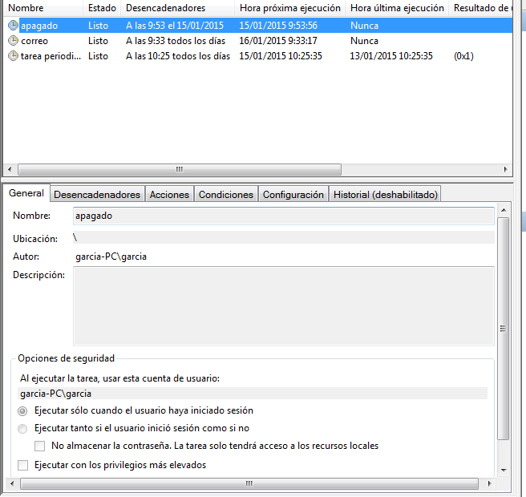

- Módulo: Administraci√≥n de Sistemas Operativos
- Título del trabajo
- Componentes del grupo: Alejandro Garcia Yumar
- Curso Académico: 2013/2014
- Fecha de entrega: 21 de Noviembre de 2014
El ejercicio consiste en configurar una serie de tareas programadas, tanto en windows como en linux.
Los tipos de tareas son diferida, periodica y asincrona.
Tarea diferida; queremos que se ejecute un apagado automatico, usando el comando shutdown.

Tarea periodica; queremos que se muestre un mensaje periodicamente.

Este es el scrip que quiero que se ejecute.
Tarea asincrona; queremos que el caso anterior se ejecute aunque el equipo este apagado, apareciendo el mensaje nada mas encenderlo.

Los tipos de tareas son diferida, periodica y asincrona, al igual que en linux.
Para ello debemos ir a Panel de control -> Herramientas administrativas -> Programador de tareas, siendo en todas muy parecidas de programar.
Tarea diferida; queremos que se ejecute un apagado automatico, usando el comando shutdown.
Tarea periodica; queremos que se muestre un mensaje periodicamente.

Tarea asincrona; queremos que el caso anterior se ejecute aunque el equipo este apagado, apareciendo el mensaje nada mas encenderlo.

La diferencia es marcar la casilla de reiniciarla si no se ejecuta.